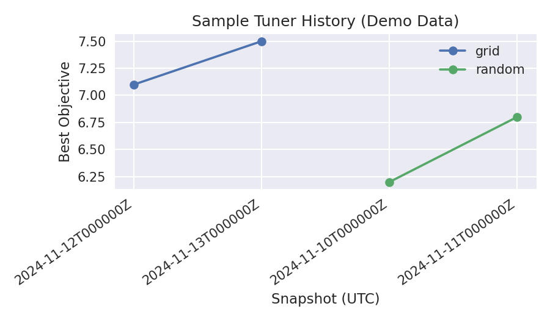

Telemetry-Driven Tuning
The hyperparameter tuning CLIs (fhops tune-random, fhops tune-grid, fhops tune-bayes)
log every run to JSONL and automatically mirror the same data into
telemetry/runs.sqlite. This guide walks through a lightweight sweep,
generating a tuning report, and interpreting the resulting artefacts.
Prerequisites
FHOPS installed in your virtual environment (
pip install -e .[dev]).The example scenarios shipped under
examples/(installed with the project).
Step 1 – Collect Telemetry
Pick a directory for the telemetry bundle and point each tuning command at the
same --telemetry-log path. FHOPS will create the JSONL file plus a mirrored
SQLite database alongside it.
mkdir -p tmp/tuner-demo
fhops tune-random examples/tiny7/scenario.yaml \
--runs 2 \
--iters 150 \
--telemetry-log tmp/tuner-demo/runs.jsonl
fhops tune-grid examples/tiny7/scenario.yaml \
--batch-size 1 \
--batch-size 2 \
--preset balanced \
--preset explore \
--iters 150 \
--telemetry-log tmp/tuner-demo/runs.jsonl
fhops tune-bayes examples/tiny7/scenario.yaml \
--trials 3 \
--iters 150 \
--telemetry-log tmp/tuner-demo/runs.jsonl
You can now supply scenario bundles instead of individual paths. The built-in
aliases baseline (tiny7 + med42), synthetic (small/medium/large tiers),
and the tier-specific aliases (synthetic-small etc.) expand to their component
scenarios. Point the tuning commands at a bundle with --bundle:
fhops tune-random --bundle baseline \
--runs 1 \
--iters 150 \
--telemetry-log tmp/tuner-demo/runs.jsonl
fhops tune-bayes --bundle synthetic-small \
--trials 2 \
--iters 150 \
--telemetry-log tmp/tuner-demo/runs.jsonl
Bundle specs also accept alias=path so you can wire custom manifests or directories
containing metadata.yaml. See Bundle Aliases below for details.
After those commands complete you will have:
tmp/tuner-demo/runs.jsonl— append-only log of each run.tmp/tuner-demo/runs.sqlite— structured tables (runs, run_metrics, run_kpis, and tuner_summaries) that mirror the JSONL payload.tmp/tuner-demo/steps/<run_id>.jsonl— optional per-step logs (only when the solver emits granular snapshots).
Step 2 – Generate a Comparison Report
Use the fhops telemetry report subcommand to aggregate the SQLite store into
machine-readable (CSV) and human-readable (Markdown) summaries:
fhops telemetry report tmp/tuner-demo/runs.sqlite \
--out-csv tmp/tuner-demo/tuner_report.csv \
--out-markdown tmp/tuner-demo/tuner_report.md
The command prints a Markdown table to stdout by default; passing --out-*
flags writes the same content to disk. The generated CSV columns include
aggregated statistics (best/mean objective, run counts) plus any matching
tuner_summaries rows added by the CLI commands, along with a
machine_costs_summary column that captures the owning/operating/repair
allowance (and FPInnovations usage bucket) applied during the best run. When
the KPI layer detects a non-default FPInnovations bucket (repair_usage_hours
≠ 10 000 h) the new repair_usage_alert column calls it out, and the CLI
prints a warning summarising which scenarios/algorithms deviated. Continuous
integration executes this pipeline for tiny7 and med42 so the
published artefacts already contain multiple scenarios.
Add --out-summary-csv / --out-summary-markdown to emit a per-scenario
scoreboard showing the best algorithm/objective for each report label (baseline,
experiment, etc.). The summary files are ideal for dashboard badges or CI checks
because they surface the top performer per scenario without manually inspecting
the full table.
Sample Output
Markdown table (tmp/tuner-demo/tuner_report.md) for a short sweep:
| Algorithm | Scenario | Best Objective | Mean Objective | Runs | Summary Best | Configurations |
| --- | --- | --- | --- | --- | --- | --- |
| bayes | FHOPS Tiny7 | 8.125 | 8.125 | 1 | 8.125 | 3 |
| grid | FHOPS Tiny7 | 7.750 | 7.438 | 4 | 7.750 | 4 |
| random | FHOPS Tiny7 | 7.375 | 6.812 | 2 | 7.375 | 2 |
Step 3 – Iterate
Use the CSV file for deeper analysis in pandas/Polars or to drive dashboards.
Inspect the Markdown report (or the uploaded CI artefact) in code reviews to track how a branch affects tuning performance.
Because the report operates directly on the SQLite store, you can rerun it at any time without regenerating telemetry.
Step 4 – Compare Multiple Reports
To track changes across branches or nightly runs, use
scripts/analyze_tuner_reports.py to merge several tuner_report.csv files
and compute deltas against a baseline:
python scripts/analyze_tuner_reports.py \
baseline=tmp/ci-telemetry/tuner_report.csv \
experiment=tmp/local/tuner_report.csv \
--out-markdown tmp/comparison.md \
--out-csv tmp/comparison.csv \
--out-chart tmp/comparison.html
The script aligns records on (algorithm, scenario) and appends best_delta_*
columns showing the improvement relative to the first report label.
Passing --out-chart generates an Altair HTML visualization of best objectives per algorithm.
Historical Trends
Keep dated copies of tuner_report.csv snapshots (for example, download the
telemetry-report artifact from multiple CI runs) and place them in a single
directory. Then call analyze_tuner_reports.py with --history-dir to
produce a longitudinal view:
python scripts/analyze_tuner_reports.py \
--report latest=tmp/ci-telemetry/tuner_report.csv \
--history-dir docs/examples/analytics/data/tuner_reports \
--out-history-csv tmp/history.csv \
--out-history-markdown tmp/history.md \
--out-history-chart tmp/history.html
The generated history table lists the best/mean objectives per algorithm and scenario across snapshots (derived from the filename stem). When the source telemetry includes extra KPIs (total production, mobilisation cost, downtime hours, weather severity, utilisation ratios) they appear as additional columns in the history summary. The optional Altair chart highlights objective trends at a glance.
Continuous integration already copies the tiny7 smoke sweep into the
history/ subdirectory of the telemetry-report artifact using UTC
timestamps, so you can download successive runs and feed them directly to the
history command. The workflow also generates history_summary.{csv,md,html}
via analyze_tuner_reports.py --history-dir so you can inspect trends
immediately after downloading the artifact.
If your repository enables GitHub Pages for the documentation or telemetry site,
the CI workflow publishes the HTML history to
https://<org>.github.io/<repo>/telemetry/history_summary.html. The README links
to the live page (see the FHOPS reference deployment at
https://ubc-fresh.github.io/fhops/telemetry/history_summary.html), so you can
share the same chart without downloading artifacts.
Delta Snapshot Summary
For a quick “what changed since last snapshot” view, pass --out-history-delta-* when
invoking analyze_tuner_reports.py. The CI workflow already produces
history_delta.{csv,md}, summarising the latest vs. previous snapshot for objectives and KPIs.
Example command:
python scripts/analyze_tuner_reports.py \
--history-dir docs/examples/analytics/data/tuner_reports \
--out-history-delta-csv tmp/history_delta.csv \
--out-history-delta-markdown tmp/history_delta.md

Sample telemetry history derived from the committed demo data. Actual CI artefacts contain the latest tiny7 and med42 measurements.
The delta outputs are versioned alongside the HTML chart. When CI finishes it
emits history_delta.{csv,md} (and any optional PNG/HTML charts you request),
mirroring the GitHub Pages snapshot. Monitoring those files or wiring them into a
status badge is a simple way to highlight regressions without manually opening the
full report.
Interpreting Dashboards
The Pages site (live links in the README) mirrors the
artefacts generated in this guide. Each page now renders as both Markdown and HTML (look
for .html suffixes if your browser should display tables instead of raw pipes). Use
the playbook below whenever CI publishes new telemetry.
history_summary.html ― trend radar
Plots best objective/KPI progression per scenario/bundle across snapshots. Hover over a point to see the report label, algorithm, best objective, gap vs. baseline, and any KPI columns included in the telemetry store.
Watch for: inflection points (gap grows >1 % week-over-week), flat lines (no new entries for a scenario), or metrics moving opposite to expectations (runtime spikes).
Next action: confirm the problematic scenario in
latest_tuner_reportand re-run the relevant tuner locally with--summary-labelmatching the failing branch. Most teams gate merges on “≤5 % gap” or “no KPI regressions,” so record the offending label in the PR thread.
latest_history_summary.{html,md,csv} ― current leaderboard
Tabulates the latest snapshot only, one row per scenario with the best algorithm, best objective, and basic deltas.
Watch for: missing scenarios (telemetry not produced), different algorithms suddenly leading (could be good or bad), or best objectives worse than the baseline.
Next action: treat this page as a regression gate. If SA on med42 falls outside its ±2 % guardrail, open the telemetry SQLite file and inspect the corresponding run for configuration drift or scenario regressions.
latest_tuner_report.{html,md,csv} ― raw per-algorithm stats
Lists every (algorithm, scenario) pair with best/mean objectives, runtimes, run counts, and configuration references.
Watch for: lower run counts (tuner crashed), unexpectedly high runtime mean, or missing KPI columns (telemetry logging failed).
Next action: when a reviewer asks “what changed?”, cite the specific row. Drill into
runs.jsonl/runs.sqliteviabest_run_idto replay the exact configuration or attach the JSONL snippet to the PR.
latest_tuner_comparison & latest_tuner_leaderboard
Derived by scripts/analyze_tuner_reports.py to highlight win counts, runtime ratios,
and deltas for every algorithm across the whole bundle.
Watch for: an algorithm’s win rate dropping after a feature lands, or runtime ratios diverging (e.g., grid becomes 3× slower than SA).
Next action: use the leaderboard to justify tuning investments (“grid wins fewer scenarios but halves runtime”) or to flag regressions. If a regression is limited to a single scenario, prioritise that dataset in the next sweep plan.
tuner_difficulty*.{html,md,csv}
Difficulty indices bucketed by bundle/tier. Columns include soft/hard success rates (≤5 % and ≤1 % gaps), average delta to the best algorithm, and MIP gap when available.
Watch for: bundles that never reach the hard success rate, or scenarios where the second-best delta is minuscule (indicating redundant algorithms).
Next action: bump iteration budgets or introduce specialised heuristics for chronic failures before expanding the benchmark matrix. If only the synthetic tiers struggle, log a follow-up in
notes/metaheuristic_hyperparam_tuning.mdso we keep attacking the right difficulty bucket.
Adding new dashboard assets
Whenever you publish a new artefact under tmp/ci-telemetry/telemetry/ add the link to
the README and docs/reference/dashboards.rst so users can discover it during reviews.
Release candidate presets
The latest release-candidate tuning sweep stores its best configurations in
notes/release_tuned_presets.json (generated via scripts/run_tuning_benchmarks.py and the
analysis helpers). Each entry includes the scenario, algorithm, objective, seed, and operator
weights. To reuse a preset, parse the JSON and forward the operator weights to the CLI:
python - <<'PY'
import json
presets = json.load(open('notes/release_tuned_presets.json'))
target = next(p for p in presets if p["scenario"] == "FHOPS Medium42" and p["algorithm"] == "random")
print(target["config"]["operators"])
PY
# feed into fhops tune-random --operator-weight swap=... etc.
This preserves the tuned improvements documented in notes/release_tuning_results.md and the
release notes.
Automated Sweeps
Use scripts/run_tuning_benchmarks.py to orchestrate random/grid/Bayesian sweeps over
the canonical bundles and emit aggregate reports in one go:
python scripts/run_tuning_benchmarks.py \
--bundle baseline \
--tier short --tier medium \
--out-dir tmp/tuning-benchmarks \
--random-runs 2 \
--grid-iters 150 \
--bayes-trials 4
The script resets (or appends to) the telemetry log, runs the requested tuners, calls
fhops telemetry report to generate tuner_report.{csv,md}, and invokes
analyze_tuner_reports.py with --out-summary-* so you get a concise per-scenario
leaderboard. Adjust --bundle and tuner-specific options to suit larger sweeps or
CI smoke passes. Repeating --tier runs each budget tier sequentially and forwards
--tier-label to the CLI tuners so telemetry collectors can pivot results by tier.
Include --tuner ils --tuner tabu (or rely on plan defaults) to sweep Iterated Local Search
and Tabu Search alongside the simulated annealing tuners; use --ils-runs / --ils-iters and
--tabu-runs / --tabu-iters to override the tier budgets when experimenting locally.
In addition to the per-scenario summaries, the script now emits:
tuner_comparison.{csv,md}— per-scenario/per-algorithm table with best objective, mean objective, mean runtime, and delta vs. the scenario leader.tuner_leaderboard.{csv,md}— aggregate win rates, average metrics, and deltas per algorithm across all scenarios.
Parallel execution
Longer sweeps benefit from process-level parallelism. Pass --max-workers to fan
out (scenario, tier, tuner) jobs across a process pool while keeping telemetry
safe:
python scripts/run_tuning_benchmarks.py \
--plan full-spectrum \
--max-workers 16 \
--out-dir tmp/tuning-benchmarks/full-spectrum-parallel \
--summary-label full-spectrum-parallel
Each worker writes to its own JSONL/SQLite chunks/ directory. When the pool
finishes, the script merges those chunks into telemetry/runs.jsonl and the
SQLite store before deleting the fragments. The merged log retains the same schema
as the serial run, so fhops telemetry report and
scripts/analyze_tuner_reports.py work unchanged.
Resource tips:
On the 72-core staging node we leave ~8 cores idle and run with
--max-workers 16; each CLI tuner can still use light threading (e.g.--parallel-workers) without oversubscribing the host.Cap per-run RSS to roughly 8 GB when launching large bundles so the node stays responsive while 16 workers stream telemetry.
The process pool bumps the random tuners’ base seeds by scenario index, ensuring the parallel sweep produces identical configurations to the serial harness.
Benchmark plans
Use --plan to reuse the curated budgets across bundles:
Plan |
Coverage |
Default tiers |
Tier overrides (random / grid / bayes) |
|---|---|---|---|
|
|
|
|
|
|
|
|
|
baseline + synthetic bundles |
|
|
Tier defaults (short/medium/long) are embedded in the runner; omit overrides to pick up
2 × 150 / 3 × 300 / 5 × 600 iteration schedules for random/grid/bayesian respectively.
Budgets deliver a 3–5 minute sweep locally on short; bump to medium or long when you need
convergence traces for modelling. Override any option (e.g., --random-runs) as needed.
When running full benchmark suites on shared hardware, pin at least 64 CPU cores to the job and cap
per-run RSS to ~8 GB to avoid starving other workloads while we expand the benchmark matrix.
ILS/Tabu inherit the same tier labels: short executes two restarts with ~200/1 200 iterations,
medium scales to three restarts with ~350/2 000 iterations, and long extends to five restarts
(ILS enables the hybrid MIP warm start) with ~700/3 000 iterations. Adjust the respective --ils-*
and --tabu-* flags when you need lighter smoke runs or deeper convergence traces.
Notebook execution cadence
CI currently runs scripts/run_analytics_notebooks.py --light on every push/PR to keep the
documentation builds fast and to guarantee that deterministic figures regenerate without manual
intervention. The stochastic notebooks (telemetry diagnostics, stochastic robustness, etc.) still
exercise live sampling even in light mode, so maintainers should schedule full notebook runs
without the --light flag at least weekly (or nightly on a beefier runner) to guard against
parameter regressions that only appear with larger ensemble sizes.
Recommended workflow (automated by .github/workflows/analytics-notebooks.yml):
For day-to-day development run the light suite locally or rely on CI for coverage.
Once per week execute
python scripts/run_analytics_notebooks.py --timeout 900(no light flag) on your workstation or a scheduled GitHub Actions workflow and upload the refreshed artefacts to the telemetry Pages bundle (tmp/pages/telemetry). The scheduled workflow already uploads the executed notebooks and metadata as a downloadable artifact (retained for 28 days) and redeploys GitHub Pages so the embedded dashboards stay current even if no new commits land that week.If a notebook fails only in full mode, open an issue referencing the relevant scenario bundle and record the failure in
notes/metaheuristic_hyperparam_tuning.mdso it feeds the roadmap.
Document the cadence (and links to historical runs) in team ops notes so newcomers know which sweep establishes the “truth” for dashboards and KPIs.
Heuristic parameter catalogue
Use the table below to map CLI flags to the tuning surface. The benchmark tiers above seed default budgets; you can override any parameter when experimenting locally or defining Optuna search spaces.
Layer |
Parameters / flags |
Typical range / notes |
Tier coverage |
|---|---|---|---|
Simulated Annealing ( |
|
Iteration horizon + geometric cooling schedule |
short/medium/long |
|
Batched neighbour evaluation with optional thread pool |
grid presets cover batch; medium/long enable workers |
|
|
Operator activation/weights; searchers toggle presets or sample weights |
All tiers via grid/random/bayes |
|
|
Multi-start counts, seed progression, reheating cadence |
Enabled in medium/long profiles; agentic tuner mutates via |
|
Iterated Local Search ( |
|
Outer perturbation/local-search cycles |
All tiers |
|
Diversification vs. exploitation |
Random/Bayesian search + medium/long defaults |
|
|
Hybrid restart when stalled |
Long tier default, optional elsewhere |
|
Operator/preset flags, batching options |
Shares registry knobs with SA so presets stay aligned |
All tiers |
|
Tabu Search ( |
|
Search horizon per tier |
All tiers |
|
List length & stagnation window |
Random/Bayesian search + tier overrides |
|
Operator/preset weights, batching |
Mirrors SA/ILS for cross-tuner parity |
All tiers |
|
Tuner budgets |
Random: |
Tier presets define default budgets; plans override for smokes/full suites |
Documented above |
Meta / agentic extensions |
Telemetry-derived features (gap slope, acceptance trajectory, scenario descriptors) |
Stored in |
Planned Phase 3 enhancement |
CI publishes the latest summary tables to GitHub Pages; check
https://<org>.github.io/<repo>/telemetry/latest_tuner_summary.md (per-scenario
leaderboard) and latest_history_summary.md (delta vs. previous snapshot) to spot regression
signals without grabbing artefacts.
The comparison and leaderboard tables are also available at
.../latest_tuner_comparison.{md,csv} and .../latest_tuner_leaderboard.{md,csv}.
Bundle-specific variants (tuner_comparison_baseline.*, tuner_leaderboard_synthetic.*) are published alongside a difficulty table (tuner_difficulty*.{md,csv}) containing best-algorithm deltas, second-best gaps, and MIP gaps when available.
Convergence metrics
Once sweeps finish, derive time-to-quality signals with
scripts/analyze_tuner_reports.py. Provide the generated report (or directory) and
the telemetry log so the script can inspect step logs:
python scripts/analyze_tuner_reports.py \
--report tmp/tuning-benchmarks/tuner_report.csv \
--telemetry-log tmp/tuning-benchmarks/telemetry/runs.jsonl \
--out-convergence-csv tmp/tuning-benchmarks/convergence_runs.csv \
--out-convergence-summary-csv tmp/tuning-benchmarks/convergence_summary.csv \
--out-convergence-summary-markdown tmp/tuning-benchmarks/convergence_summary.md
The summary tallies, per scenario/algorithm/tier, how many runs reach a ≤1 % gap versus
the recorded MIP optimum, plus the mean/median iteration counts required. Step logs
must be present (the runner writes them to telemetry/steps/<run_id>.jsonl) and each
scenario needs a matching solve-mip baseline in the telemetry store. Adjust
--convergence-threshold if you need a different gap target.
When the default HiGHS setup struggles on larger instances, run scripts/ingest_mip_baselines.py
with --driver gurobi (after installing fhops[gurobi] and configuring the Gurobi license) to
log the exact optimum using the commercial solver, then rerun the analyzer.
Tuner metadata summary
Runs now embed high-level metadata (algorithm, budgets, progress) via tuner_meta. Use
scripts/summarize_tuner_meta.py to inspect the aggregated view:
python scripts/summarize_tuner_meta.py telemetry/runs.sqlite \
--out-markdown tmp/tuner_meta_summary.md
The summary table lists algorithms, number of runs, unique scenarios, and representative budgets.
Bundle Aliases
The tuning commands accept --bundle to expand a manifest of scenarios. FHOPS ships
the following aliases:
baseline→examples/tiny7/scenario.yamlandexamples/med42/scenario.yamlsynthetic→ thesmall,medium, andlargesynthetic tierssynthetic-small/synthetic-medium/synthetic-large→ individual synthetic tierstiny7/med42/large84→ convenience handles for the built-in evaluation set
Aliases are case-insensitive and you can specify multiple --bundle flags in a single
command. For custom bundles, pass alias=/path/to/metadata.yaml (or the directory
containing metadata.yaml). Each entry inside the metadata file is resolved relative to
its location, so examples/synthetic/metadata.yaml gives you synthetic-small et al.
Bundle members are logged in telemetry context as bundle / bundle_member and appear
in the aggregated tuner_summary records as bundle:member keys. This keeps the
history/delta tooling aware of the scenario family without changing existing report formats.
CI Automation
The main CI workflow runs a nightly smoke sweep on examples/tiny7 and
uploads tmp/ci-telemetry/tuner_report.{csv,md} as build artefacts. Use those
artefacts as a baseline when evaluating new heuristics or tuning strategies.
For longer experiments (e.g., synthetic bundles or larger iteration budgets),
reuse the same workflow with adjusted --runs / --trials / --iters
parameters and point the telemetry log at a scenario-specific directory.
Downloading CI Reports
Each CI run exposes a telemetry-report artefact containing the latest
tuner_report.{csv,md} files alongside the raw telemetry bundle. To download:
Via the GitHub web UI: open the completed workflow run, expand the Artifacts section, and click
telemetry-reportto fetch the zip file.Via the command line (requires gh):
gh run download --repo <owner>/<repo> --name telemetry-report --dir tmp/ci-telemetry
After extraction, inspect tuner_report.md directly or load
tuner_report.csv into pandas/Polars for deeper analysis.